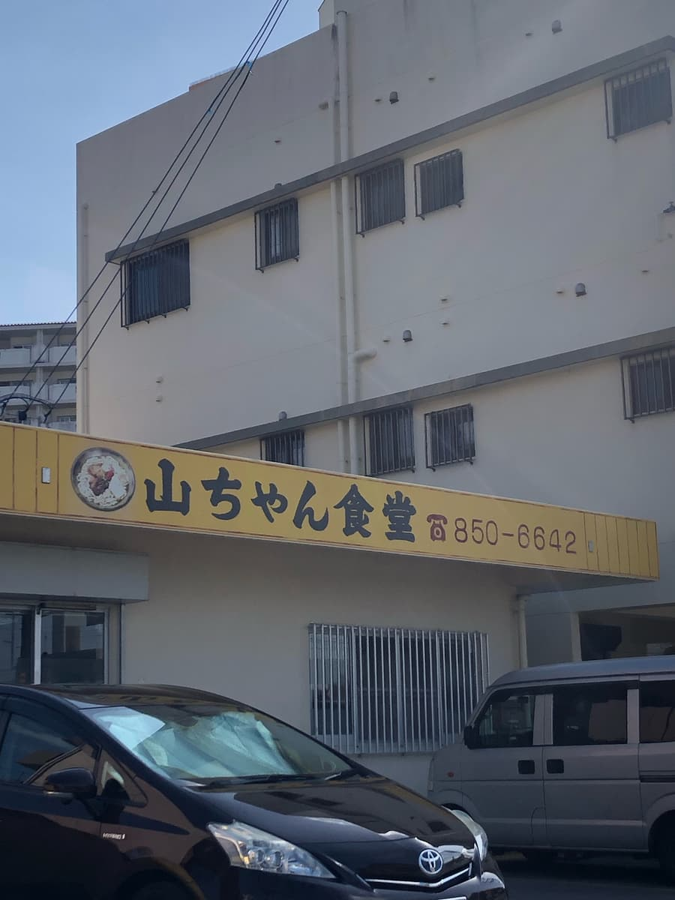
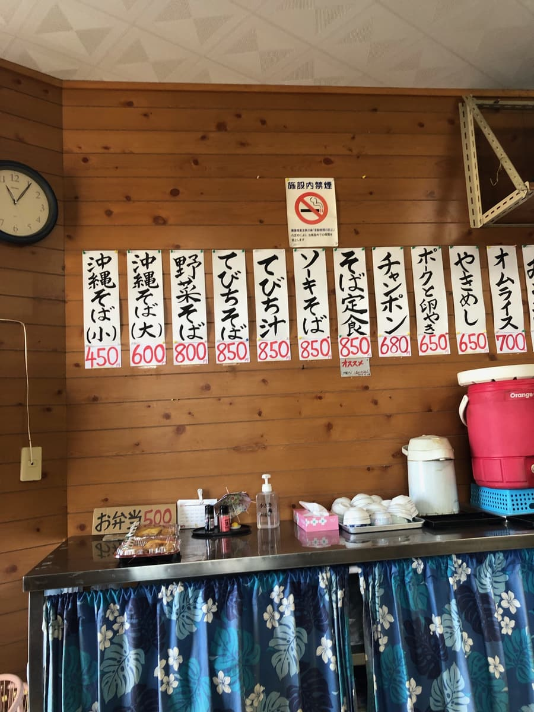
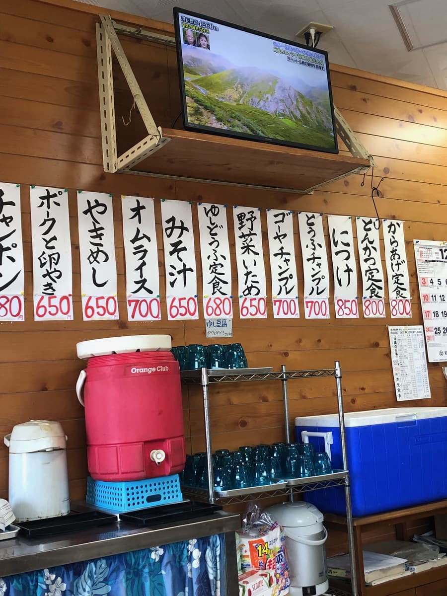
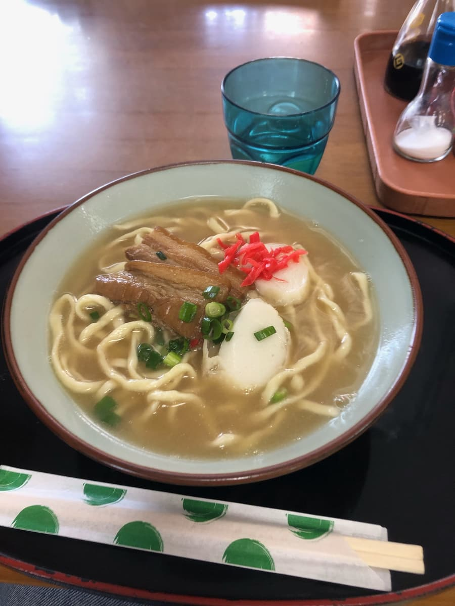

2023年11月去吃的😊 因為是「第13屆沖繩麵集章活動（2023.10.1～2024.2.29）」期間，本來想在參加店吃，但這次辦事的這一帶沒有對象店家，所以就在偶然找到的這家食堂吃了😆



走進店內，雖然是當天剛開始營業，已經有幾位當地客人坐在桌邊了。
牆上貼的菜單有「排骨麵」，外面的旗幟也有「排骨麵」，所以我點了「排骨麵」，結果得到的回答是「沒有」(^0^;) 「咦？」一下子嚇了一跳，不過這家食堂不是沖繩麵專賣店，而是供應沖繩料理的一般食堂，我再次確認是不是「沖繩麵」相關的菜單全都沒有，結果說「沖繩麵」是有的，所以就點了那個😆 總之太好了。

沖繩麵來了😆 先喝一口湯。是豬骨和柴魚的合併高湯，豬骨味突出的湯頭。感覺普通。
接著吃麵。中粗的直麵很軟。是家常、非常普通的沖繩麵呢。三層肉有一點筋感。
評分（8.5分/15分）：是家常、普通的沖繩麵😄 我點了大碗，不過價格只要600日圓很實惠，量感覺沒有很多。外面的旗幟明明在宣傳「排骨麵」，卻沒有賣，讓我忍不住笑出來😆
麵：★★★☆☆（3）
湯頭：★★★☆☆（3）
配料：★★✬☆☆（2.5）